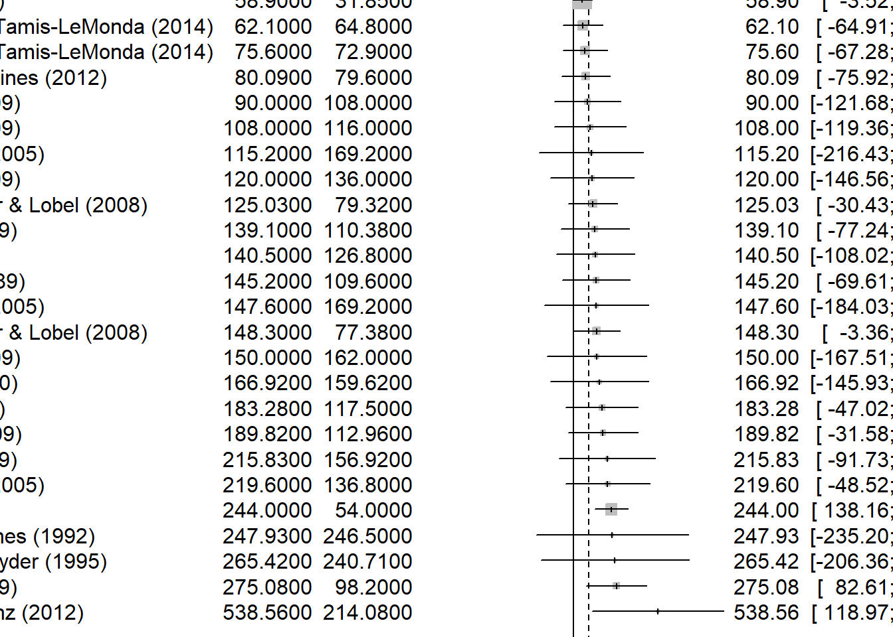
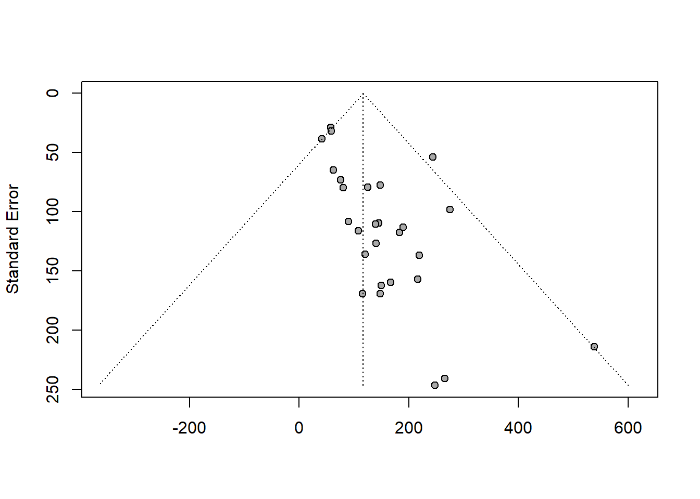
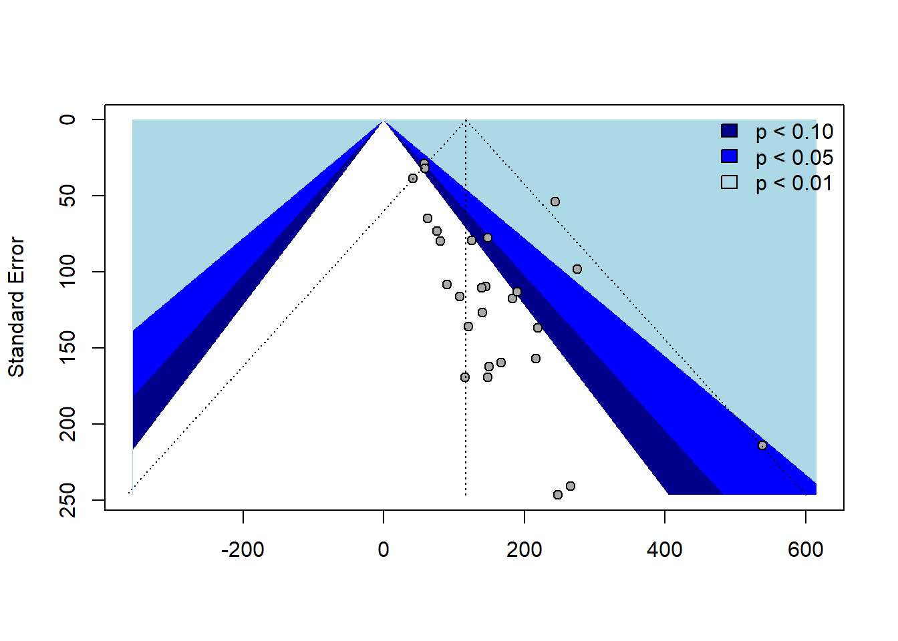

library(readxl)
data <- read_excel("C:/Github-tem/RRcourse2023/13. Metaanalysis/data/metaanalysis_data.xlsx")
View(data)Metaanalysis example in R
FE <- meta::metagen(TE=Mean_girls_play_female,
seTE=SD_girls_play_female,
data=data,
studlab=paste(Study),
comb.fixed = TRUE,
comb.random = FALSE)
FENumber of studies: k = 27
95%-CI z p-value
Common effect model 97.6643 [70.2324; 125.0963] 6.98 < 0.0001
Quantifying heterogeneity:
tau^2 = 1907.5284 [0.0000; 3470.6208]; tau = 43.6753 [0.0000; 58.9120]
I^2 = 0.0% [0.0%; 42.5%]; H = 1.00 [1.00; 1.32]
Test of heterogeneity:
Q d.f. p-value
25.65 26 0.4824
Details on meta-analytical method:
- Inverse variance method
- Restricted maximum-likelihood estimator for tau^2
- Q-Profile method for confidence interval of tau^2 and taumeta_boys <- meta::metacont(n.e=N_girls,
mean.e=Mean_girls_play_female,
sd.e=SD_girls_play_female,
n.c=N_boys,
mean.c=Mean_girls_play_male,
sd.c=SD_girls_play_male,
data=data,
studlab=paste(Study),
comb.fixed = TRUE,
comb.random = TRUE,
)
meta_boysNumber of studies: k = 27
Number of observations: o = 1610
MD 95%-CI z p-value
Common effect model 54.8709 [48.6280; 61.1138] 17.23 < 0.0001
Random effects model 78.6881 [53.2504; 104.1257] 6.06 < 0.0001
Quantifying heterogeneity:
tau^2 = 3601.1939 [2022.9513; 8905.8496]; tau = 60.0099 [44.9772; 94.3708]
I^2 = 86.1% [80.9%; 89.9%]; H = 2.68 [2.29; 3.14]
Test of heterogeneity:
Q d.f. p-value
187.21 26 < 0.0001
Details on meta-analytical method:
- Inverse variance method
- Restricted maximum-likelihood estimator for tau^2
- Q-Profile method for confidence interval of tau^2 and tauRE <- meta::metagen(TE=Mean_girls_play_female,
seTE=SD_girls_play_female,
data=data,
studlab=paste(Study),
comb.fixed = FALSE,
comb.random = TRUE)
RENumber of studies: k = 27
95%-CI z p-value
Random effects model 116.8758 [79.5945; 154.1571] 6.14 < 0.0001
Quantifying heterogeneity:
tau^2 = 1907.5284 [0.0000; 3470.6208]; tau = 43.6753 [0.0000; 58.9120]
I^2 = 0.0% [0.0%; 42.5%]; H = 1.00 [1.00; 1.32]
Test of heterogeneity:
Q d.f. p-value
25.65 26 0.4824
Details on meta-analytical method:
- Inverse variance method
- Restricted maximum-likelihood estimator for tau^2
- Q-Profile method for confidence interval of tau^2 and tauFE %>% forest(sortvar=Mean_girls_play_female)
how does gender affect it?
FE %>% metareg(~ `Female authors` + `Male authors`)
Mixed-Effects Model (k = 27; tau^2 estimator: REML)
tau^2 (estimated amount of residual heterogeneity): 1946.5997 (SE = 2212.7349)
tau (square root of estimated tau^2 value): 44.1203
I^2 (residual heterogeneity / unaccounted variability): 24.93%
H^2 (unaccounted variability / sampling variability): 1.33
R^2 (amount of heterogeneity accounted for): 0.00%
Test for Residual Heterogeneity:
QE(df = 24) = 23.6386, p-val = 0.4824
Test of Moderators (coefficients 2:3):
QM(df = 2) = 0.8963, p-val = 0.6388
Model Results:
estimate se zval pval ci.lb ci.ub
intrcpt 151.2803 54.2135 2.7905 0.0053 45.0238 257.5368 **
`Female authors` -7.9308 20.8577 -0.3802 0.7038 -48.8112 32.9496
`Male authors` -17.7918 23.1683 -0.7679 0.4425 -63.2009 27.6172
---
Signif. codes: 0 '***' 0.001 '**' 0.01 '*' 0.05 '.' 0.1 ' ' 1Funnel Plot
RE %>% funnel()
contour_levels <- c(0.90, 0.95, 0.99)
contour_colors <- c("darkblue", "blue", "lightblue")
funnel(RE, contour = contour_levels, col.contour = contour_colors)
legend("topright", c("p < 0.10", "p < 0.05", "p < 0.01"), bty = "n", fill = contour_colors)